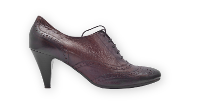

Leistungen Schuhmanufaktur Formschön
Das leisten wir für Sie
Wir lieben Leder

Reparieren:
Kommen Sie mit hochwertigen Lederwaren zu uns, wenn etwas kaputt ist. Wie zum Beispiel: ein eingerissener Riemen am Rucksack, ein Reißverschluss an der Tasche, der sich verhakt hat, schief getretene Stiefelsohlen, ein locker gewordener Schuhabsatz. Der Erhalt von schönen, Ihnen lieb gewordenen Qualitätswaren ist uns ein Anliegen. Wegwerfen war gestern!
Verbessern:
Scheuen Sie sich nicht, auch mit guten, industriell gefertigten Qualitätsschuhen zu uns zu kommen, wenn Sie spezielle Anpassungswünsche haben. Wie zum Beispiel: Schuhe weiten, Stiefelschäfte kürzen, Spezialsohlen anbringen, Beinlängen-Differenz ausgleichen, Absätze erhöhen. Es ist uns wichtig, dass Ihre Füße eine passgenaue Bekleidung haben. Schmerzen sind vermeidbar.
Kreieren:
Sprechen Sie uns an, wenn Sie exklusive Schuhe tragen wollen, Modelle nach Ihren modischen Vorstellungen und der Eigenart Ihrer Füße. Neben der Fertigung individueller Maßschuhe gibt es auch kostengünstigere Varianten, wie etwa die Maßkonfektion mit vielfältigen Wahlmöglichkeiten. Zögern Sie nicht!
20 Jahre Schuhmanufaktur Formschön
Immer einen Schritt voraus
Der Weg zu Ihrem Maßschuh
Der zeitliche Aufwand bei der Herstellung Ihrer individuellen Maßschuhe kann beträchtlich variieren, je nach Modell, Machart und Sonderwünschen. Wir rechnen mit mindestens 30 Arbeitsstunden. Der gesamte Arbeitsprozess zieht sich in der Regel über acht Wochen hin. Dreimal sind Sie in dieser Zeit gefragt: Beim Vermessen und Wählen des Modells, bei einer ersten Anprobe und schließlich am Tag der Fertigstellung.
Rechnen Sie pro Paar mit einem Preis zwischen 2000,– und 3000,– Euro. Sobald wir einen fußgerechten Leisten für Sie gefertigt haben, können wir ihn für alle Nachfolgemodelle nutzen – und Sie sparen bares Geld. Damenschuhe sind in der Regel aufwendiger und daher etwas teurer als Modelle für den Herrn.
1
Die Fußvermessung
2
Die Auswahl von Farbe und Form
3
Die Entscheidung fürs Leder
4
Die Herstellung des Leistens
5
Die Fertigung des Schuhs – Teil I
6
Die Anprobe
7
Die Fertigung des Schuhs – Teil II
8
Letzte Anpassungen und Feinarbeiten
Pflegetipps Schuhmanufaktur Formschön
Unsere Pflegetipps
Ihren Fuessen zuliebe
1
Verwenden Sie Streckleisten aus Holz und spannen Sie Ihre Schuhe ein, solange sie vom Tragen noch warm und geschmeidig sind.
2
Verwenden Sie nicht jeden Tag dasselbe Paar. Gute Schuhe wollen ausruhen dürfen.
3
Bewahren Sie Schuhe in einem Schrank mit Lüftungsschlitzen auf.
4
Pflegen Sie das Oberleder ab und zu mit einem flüssigen Reiniger. Achten Sie bei Lack- und Rauleder auf spezielle Pflegemittel.
5
Stopfen Sie nass gewordene Schuhe mit Zeitungspapier aus, entfernen Sie weiße Ränder mit warmem Wasser.
6
Verwenden Sie nach der Fleckenentfernung passende Pflegemittel. Wir beraten Sie gerne.
7
Entfernen Sie vor dem Pflegen die Schnürsenkel.
8
Polieren Sie ausgiebig. Fragen Sie uns nach den richtigen Bürsten.
9
Stecken Sie Ihre Schuhe auf Reisen in luftdurchlässige Beutel.
10
Verwenden Sie immer einen Schuhlöffel.